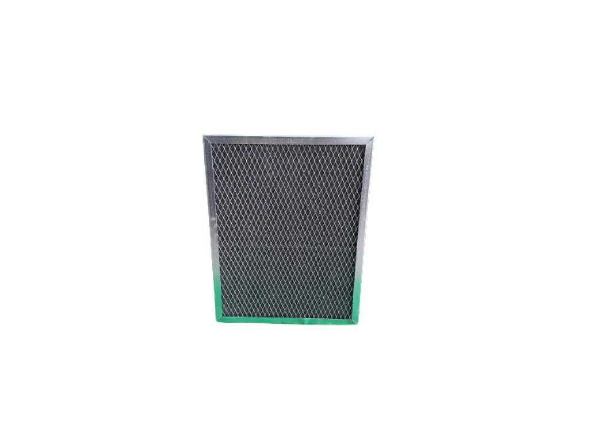

☎ 0216 344 48 19

NFS 1000 U Karbon Filtre, NEFFES markasının Hava Temizleme kategorisinde yer alan endüstriyel bir üründür. Ürün kodu: 1000. Klimasun güvencesiyle orijinal olarak tedarik edilir; stoklu ürünlerde aynı gün sevkiyat, stokta olmayanlarda Almanya ve İtalya'dan sipariş üzerine temin sağlanır.
| Ürün Kodu | 1000 |
|---|---|
| Marka | NEFFES |
| Alt Kategori | HEPA |
| Temin Durumu | Temin Edilebilir |
Sıfır ürünlerde üretici garantisi; revizyonlu / 2.el ünitelerde ürüne göre 6–12 ay Klimasun garantisi. Kapsam teklifte belirtilir.
Stoktaki ürünler aynı iş günü kargoya verilir; stokta olmayanlar Almanya ve İtalya'dan sipariş üzerine orijinal olarak temin edilir.
2004'ten beri endüstriyel iklimlendirmede Erdinç Klima güvencesi; F-Gaz / EKOMVET yetkinliği, kurumsal e-fatura ve teknik destek.
Bu model için yedek parça ve muadil seçenekleri için kodu bize iletin: NEFFES ürünleri · muadil ürünler · servis & bakım.
Evet. NEFFES 1000 arızalı ünitelerine bakım, kompresör değişimi, gaz şarjı ve revizyon dahil servis veriyoruz.
Stok durumuna göre sıfır, revizyonlu 2. el veya sipariş üzerine temin edilebilir. Teklif formundan sorabilirsiniz.
Uygun muadil / eşdeğer ürünler için kodu bize iletin; güncel Rittal ve MKS Clima muadilleri önerilir.